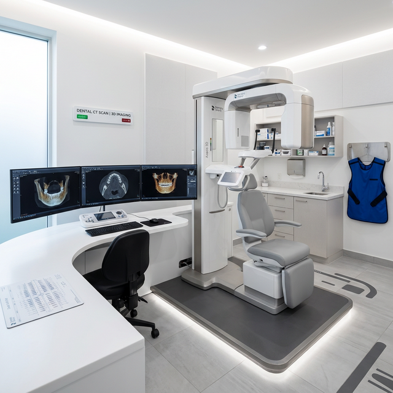

편안한 치료를 위해
한 번의 내원으로
사랑니를 발치합니다.
당일 발치 가능합니다.

안전하고 신속한 사랑니 발치 시스템
3D CT를 활용한 대학병원급 고난도 사랑니 발치 시스템을 갖추어
신속하고 안전하게 사랑니를 발치하고 주변 치아 건강을 회복합니다.
사랑니 발치 대상
- 치열에 변화가 있을 경우
- 정상맹출을 방해하는 경우
- 인접 치아 기능과 발달을 방해할 경우
- 충치나 질환을 일으키는 경우
- 불규칙하게 자라 통증이 있는 경우
사랑니 발치 과정

STEP 01 정밀진단 및 상담
3D CT와 파노라마 X-ray 등 첨단 디지털 장비를 이용해 사랑니의 위치와 각도,
주변 치아 상태 등을 면밀히 검사하고 환자와 충분한 상담을 진행합니다.

STEP 02 맞춤 마취 진행
국소 마취 시스템을 통해 통증을 최소화하며, 환자의 상태에 따라 적절한
마취 방법을 선택하여 편안한 진료를 제공합니다.

STEP 03 사랑니 당일 발치
숙련된 보건복지부 인증 통합치의학과 전문의가 안전하고 신속하게 사랑니를 발치합니다.

STEP 04 주의사항 및 사후관리
발치 후 주의사항을 부드럽게 안내해드리고, 주기적인 검진을 통해 회복 상태를 확인합니다.
사랑니 발치 후 주의사항
발치 후 물려드린 거즈는 2시간 동안 꽉 물고 계셔야 하며, 침이나 피는 뱉지 말고 삼켜주세요.
처방받은 약은 항생제가 포함되어 있으므로 증상이 완화되어도 끝까지 복용해주세요.
발치 후 2일간은 발치 부위 뺨 쪽에 10분 간격으로 냉찜질을 해주시는 것이 좋습니다.
사우나, 찜질방, 과격한 운동은 혈류량을 크게 하여 지혈에 방해가 되므로 삼가주세요.
식사는 마취가 풀린 후 완전히 지혈된 다음 하시고 당분간 부드럽고 식힌 유동식을 드세요.
빨대 사용이나 입 속 압력을 높이는 행동은 출혈을 유발할 수 있으므로 삼가주세요.
자주 묻는 질문
올곧게 자란 사랑니라면 무조건 발치할 필요는 없습니다. 하지만 통증, 염증이 있거나 충치가 발생한 경우, 혹은 옆 치아를 밀어 문제를 일으킬 가능성이 높다면 발치하는 것이 좋습니다.
국소 마취를 통해 통증을 최소화하고 발치를 진행합니다. 마취 중에는 큰 통증을 느끼지 못하지만, 마취가 풀린 후에는 약간의 통증과 붓기가 있을 수 있으며 처방해 드린 약을 드시면 호전됩니다.